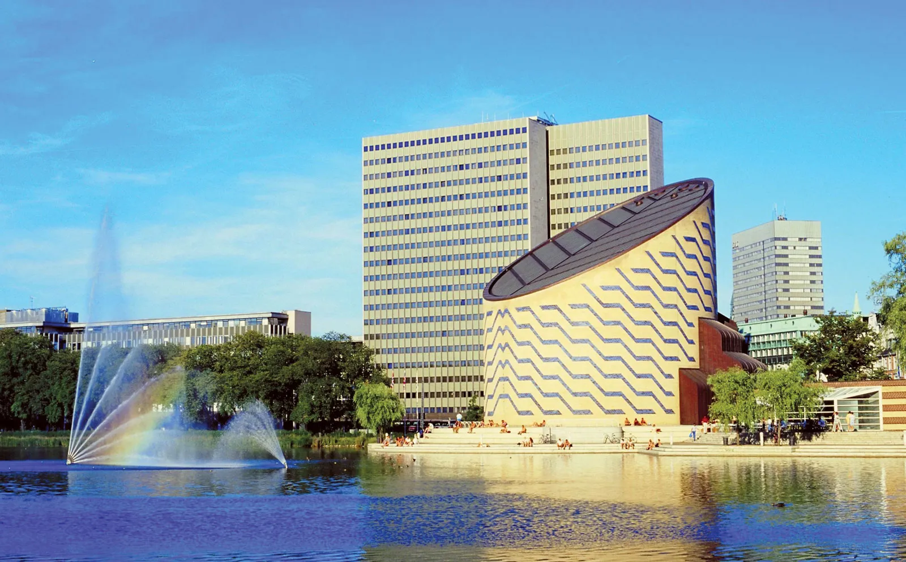

|
|
|
|---|
Following IFL tradition, IFL 2022 will use a post-symposium review process to produce the formal proceedings.
Before the symposium authors submit draft papers. These draft papers will be screened by the program chair to make sure that they are within the scope of IFL. The draft papers will be made available to all participants at the symposium. Each draft paper is presented by one of the authors at the symposium.
After the symposium every presenter is invited to submit a full paper, incorporating feedback from discussions at the symposium. Work submitted to IFL may not be simultaneously submitted to other venues; submissions must adhere to ACM SIGPLAN's republication policy. The program committee will evaluate these submissions according to their correctness, novelty, originality, relevance, significance, and clarity, and will thereby determine whether the paper is accepted or rejected for the formal proceedings. We plan to publish these proceedings in the International Conference Proceedings Series of the ACM Digital Library, as in previous years.
Reviewing is single blind. There will be at least 3 reviews per paper. The reviewers have 6 weeks to write their reviews. For the camera-ready version the authors can make minor revisions which are accepted without further reviewing.
| Submission deadline of draft papers: | 7 August 2022 |
| Notification of acceptance for presentation: | 9 August 2022 |
| Registration deadline: | 12 August 2022 |
| IFL Symposium: | 31 August - 2 September 2022 |
| Submission of papers for proceedings: | 5 December 2022 (to be confirmed) |
| Notification of acceptance: | 2 February 2023 (to be confirmed) |
| Camera-ready version: | 14 March 2023 (to be confirmed) |
All contributions must be written in English. Papers must use
the ACM two columns conference format, which can be found
here. (For LaTeX
users, start your document with
\documentclass[format=sigconf]{acmart}.) Note that
this format has a rather long but limited list of packages that
can be used. Please make sure that your document adheres to this
list.
Contributions submitted for the draft paper deadline must be between two and twelve pages long. For the final proceedings twelve pages (excluding references) is the hard upper limit. Especially application papers might be considerably shorter.
Submission link TBA.
 |
 |
|---|